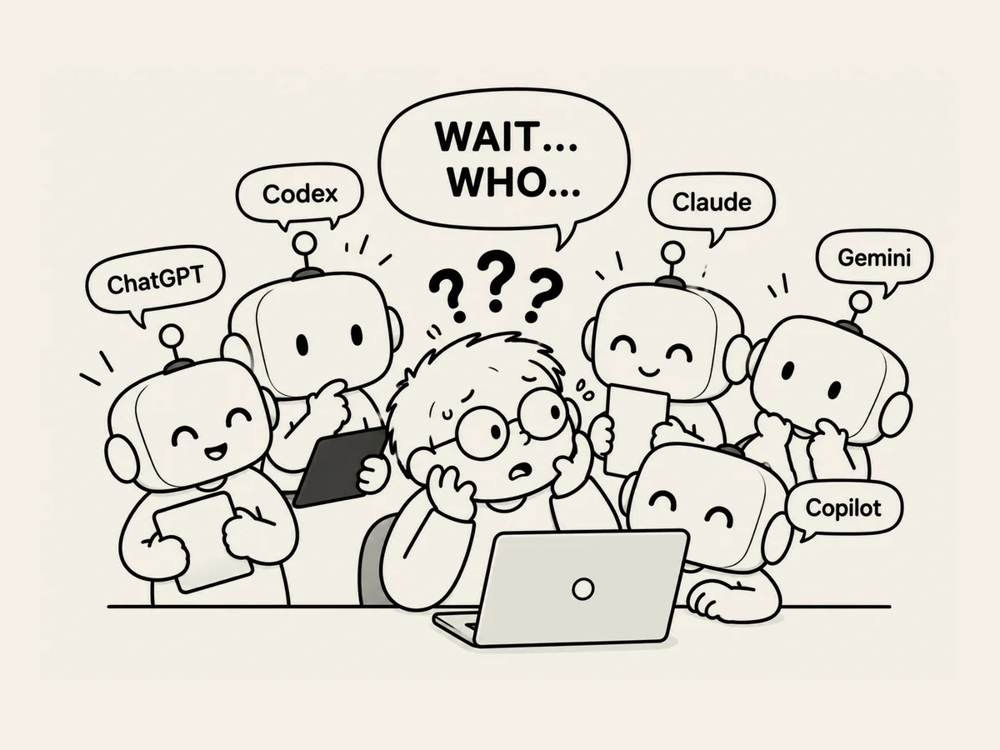

17.
잠깐, 지금 내가 누구와 대화하고 있는 거야?
웹사이트를 만들 때 Codex를 많이 사용했다.
VS Code라는 프로그램 안에서 바로 대화할 수 있어서 편하다.
쉽게 말하면,
웹사이트를 만드는 작업실 안에 AI가 같이 들어와 있는 셈이다.
어느 날 웹사이트 전체를 검토하고 있었다.
AI와 한참 대화하면서 이것저것 고쳐나갔다.
그런데 갑자기 메시지가 떴다.
이용 시간이 만료됐으니 업그레이드하거나 토큰을 구입하라는 내용이었다.
어?
Codex가 왜 이러지?
확인해봤다.
VS Code를 다시 실행하는 과정에서
나도 모르게 다른 AI와 대화하고 있었다.
나는 Codex와 이야기하고 있다고 생각했는데,
한참 동안 Copilot과 대화하고 있었던 것이다.
ChatGPT.
Codex.
Claude.
Gemini.
Copilot.
이제는 AI 이름부터 확인하고 이야기해야 하나 보다.
AI 전성시대다.
